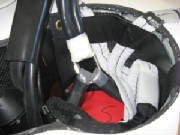
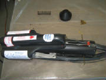

|
March 4th, 2012 6.0 hours - Determine
empty weight and balance
I borrowed a set of electronic scales from the local
EAA chapter. The scales are 1000 pound capacity (each), and are low-profile, being only 3 inches high. The chapter
scales kit includes wooden ramps for rolling the plane onto the scales and a set of calibrated weights for checking the
scale accuracy. Each scale is also mounted on a wheeled dolly. First I checked each scale to confirm their individual accuracy. Then, with the help of two chapter members,
we positioned the main wheels on two of the scales. These scales are positioned so that the wheels on the scale dollies
are oriented perpendicular to the fuselage center line. This is so that as the main gear struts spread, there is no
residual side loading on the scale platforms. With
the main wheels on the scales and chocked, we placed the third scale under the tail wheel and leveled the plane using the
template that comes with the kit. The template fits under the wing at the wing root. After that, it was a matter of recording the weights, then use a plumb bob and tape measure to measure distances
from the datum point (the wing leading edge at the root) to the main wheels and tail wheel. Finally, I determined
the total empty weight and center of gravity position using the formulas in the Sinus Flight and Maintenance Manual.
The measured wheel positions are within 2 mm, and the calculated empty center of gravity position are within 1 mm of the
sample values in the Pipistrel manual, so things look good. At this point, the plane is done except for a few final details. I have to get the required permanent data
plate engraved, then mount it. I can do that now that I have the weight information. I need to send the ballistic
parachute back for a re-pack, since the expiration date occurs this month. I have to start the engine, complete the
carburetor balance, and check the engine valve lifters for full oil, pay the state excise tax, activate flight insurance,
and arrange for the final FAA or DAR inspection. All that will consume the next several weeks, then I'll be ready
for first flight.
July
15, 2012 4.5 hours - First engine run - balance carburetors and check valve tappets
I measured three gallons of gas into each wing tank in one-gallon
increments, marking the fuel sight gauges at the one, two and three-gallon points. I recruited a brother-in-law to help with the final engine checks and first runs. We completed the mechanical
synchronization of the Rotax carburetors, checked the fluids, burped the oil and started the engine for the first time.
The engine started right up and idled nicely. After some minor adjustment of the idle speed and allowing the oil to
get above 120 deg F, we checked the valve tappets by following Rotax Service Instruction SI-912-018. One tappet on number
one cylinder was soft. We went ahead with the
carburetor pneumatic balancing, using the Carbtune system that I ordered from X-Air in Australia. This is a manometer-type
gauge, but uses steel rods that slide within glass tubes, and it works very well. The balancing required only a minor
adjustment, after which the carb balance was very close from idle up to 3500 RPM. Then we did two of the allowed five-minute runs at 3500 RPM, checking the soft tappet after each run. The tappet
remained soft, so I concluded that the tappet has to be changed, and did not attempt the third five-minute run that is permitted
by the Rotax manual, since there was no change at all in the feel of the soft tappet after the previous runs. I located a Rotax heavy maintenance technician to discuss the valve tappet.
He said that it is not common to find a soft tappet, but he has replaced a few. This involves pulling the cylinder.
I ordered the necessary parts form California Power Systems, who said that the tappets are not a stock item, and have to come
from Austria, with a 60-day lead time.
August 4th,
2012 5.0 hours - Remove Galaxy parachute for servicing
The Galaxy rescue parachute has reached its expiration date,
so it needs to go back to Galaxy in the Czech Republic for servicing, which includes a check and repack of the parachute, and replacing the rocket propellant.
After a few inquiries and a web search, I located the
Sport Flying Shop in Torrance, CA. Sport Flying is a US importer and distributor for Galaxy Rescue Systems. I contacted them and
inquired about servicing my parachute. Matt, their GRS expert, confirmed that they handle servicing, but it is not something
that they do themselves. The procedure is to remove the chute, ship it to Sport Flying. They then ship it to Galaxy
in the Czech Republic. After servicing, the parachute and rocket are returned to Sport Flying, who then return it to
the owner. The turnaround time is about six weeks. This is the only practical means of having the GRS serviced,
because Galaxy has to ship the package to someone in the US who has an explosives import license. I don't even want
to think about what a hassle it must be to acquire a license for importing explosives from another country. The cost of the servicing is $1800, which includes shipping to the Czech
Republic. It is returned with a nine-year expiration date, rather than the six-year cycle that has been normal until
recently. Matt said that they provide this service for all Galaxy owners, even those like me who acquired their GRS
units from some other source. He said that they make essentially no profit on the transaction, and offer it as a service
to the GRS owner community. I found a few different
descriptions of the GRS removal and rocket de-activation, including one from Pipistrel, but the details were sketchy and difficult
to understand. Matt, however, sent me a very complete description that included a number of helpful photographs.
Using the instructions from Sport Flying, I found it relatively straightforward. The process is: 1. Remove the bolts that clamp the GRS handle to the cockpit cross-tube.
2. Remove the flat-head machine screws that fasten the handle to the end of the activation cable, then
remove the handle. This will allow the cable to be pulled back through the cockpit bulkhead.
3. Disconnect the upper flaperon pushrod fitting for the right flaperon. This is necessary
to provide the clearance needed to feed the cable end fitting through the bulkhead.
4. Cut through the silicone
sealant around the GRS cover in the top of the fuselage. Don't cut where the suspension straps pass under the cover
and be careful not to damage the straps. I used a spring steel spatula to work under the cover and cut through the silicone
with minimal damage to the fuselage and cover. I managed to remove the cover with just one small gel coat chip
at a particularly stubborn spot.
5. Remove the pin that holds the securing straps over the top of the parachute.
6. Open the carabiner that ties the rocket lines to the parachute package, then slip the lines out of
the carabiner.

7. Pull out the large carabiner that ties the parachute shrouds to the fuselage suspension straps.
Open the carabiner and slip the suspension straps free.
8. Lift the parachute out of the fuselage.
9. Using a 3 mm allen wrench, remove the four machine screws that secure the rocket assembly to the parachute
housing.
10. Pull the rocket assembly out of the fuselage, feeding the activation cable through the baggage compartment.

11. Re-install the handle on the end of the cable. It goes back to Galaxy with the rest of the
rocket assembly.
12. Fashion a safety pin and insert it through the firing trigger.
13. Drill out the rivets that secure the rocket end cap. Remove the cap and the spring under the
cap.
14. Remove the heat shrink over the threaded cable receptacle at the other end of the rocket assembly.
15. Remove the nylon nut and slide it down onto the cable.
16. Slide the plastic cover down the cable to provide access to the rocket and firing mechanism.

17. Remove the small bolt that attaches the firing cable to
the trigger mechanism.

18. With the bolt removed, you can slide the pin free and remove it.
19. Slide the entire rocket assembly out of its housing
|
| Rocket body ready for removal from the housing |
20. Clamp the rocket body in a vise and unscrew the rocket nozzle end.
21. Remove the rocket nozzle, lower propellant spacer, rocket propellant and upper propellant spacer.
|
| Rockel nozzle and lower propellant spacer |
|
| Nozzle, lower spacer, upper spacer |
22. Unscrew the top end cap and firing mechanism from the rocket body and remove the small circular black
powder pouch.
23. Clamp the top end cap in a suitable base (I used a machinist's
vice). Take to a safe location, attach a lanyard to the trigger and give it a sharp pull to fire the squib. It
will sound like a medium-sized firecracker and discharge a puff of black smoke.
|
| Firing squib visible under cap |
|
| The red lever pulls free, releasing the firing pin |
|
| Ready to pull the trigger and fire the squib |
|
| Firing pin released and squib fired |
24. Now separately burn the black powder charge and rocket propellant. Wrap each one in heavy brown
paper, take them to a sizable area free of flammable material, have a fire extinguisher or water bucket at hand, then light
the paper and stand back. The black powder charge will burn rapidly and create a large puff of black smoke, but will
not make much noise. The rocket propellant will not explode, but will burn rapidly, creating a very bright flame and
a large cloud of smoke. You might want to notify your neighbors in advance so they won't be calling the fire department.
25. Now you can reassemble the large components, wrap up the smaller ones, and send the entire parachute-rocket
system to the Sport Flying Shop, if you are located in the US.
August 18th, 2012 2.0 hours - Remove
and replace 12V main battery
The 12V battery provided with the kit is now a few years old,
and has been sitting unattended for long periods, so I am replacing it with a new one. I located the same battery using
some information provided by a member of the Pipistrel owners' forum. It is an Enersys (Hawker) Cyclon 0859-0020 E-Cell
12 Volt/8 Amp Hour sealed lead acid battery. I ordered it through Amazon.com, but the supplier is Portable Power Systems
(www.PortablePower.com). I removed the four 4 mm hex cap screws that
secure the battery to the electrical panel, then removed the shrink tubing over the battery terminals. The main power
and ground wires were soldered to the battery lugs, so I de-soldered the wires and clipped the wire ties that held the wires
to the body of the battery. I drilled similar holes in the ribs of the plastic case of the new battery, positioned the
new battery under the electrical panel, soldered the wires to the battery lugs, secured the wires to the battery with wire
ties through the holes that I had drilled, then mounted the battery to the electrical panel with the four cap screws.
|
| Battery leads soldered to terminals |
|
| New battery soldered to leads |
September 22nd-23rd, 2012 - Personal preparation
for first flight
I have arranged for an experienced glider flight instructor from our Seattle-area soaring
club to perform the first flight on my Sinus. He is a former Air Force F-15 pilot with 3600 total hours, 800 hours in
gliders and several types of motorgliders, including the Pipistrel Taurus. My insurance provider decided that both Stan
and I needed some time in make and model, so I arranged for both of us to fly with George Powers in his Sinus this past weekend.
We traveled to George's home field in northern California, located in prime soaring country northwest of Lake Tahoe in the
foothills of the Sierra Nevada Mountains. George very generously flew with both of us on Saturday and Sunday.
We put eight hours on his Sinus over the two days, about evenly divided between powered and soaring flight, with several takeoffs
and landings each. I was able to do some real soaring and achieve a 2500 ft altitude gain in some choppy early afternoon
lift on Saturday. I am now feeling confident in my own ability
to handle the Sinus taildragger safely, although I will stick to benign weather conditions and light winds until I get more
experience. The weekend left me very eager to get the final details complete on mine and schedule the final inspection.
Then it will be down to finding a good weather day for the first flight. The Rotax valve lifters are still en route from Austria, now estimated to arrive by September 30th. My parachute
was at Galaxy in the Czech Republic three weeks ago, so I anticipate that it will be returned for re-installation at about
the same time as the new valve lifter is installed. Late October seems like a reasonable estimate for final inspection
and first flight.
September 30th, 2012 - Install cockpit fuel level decals
I had ordered a set of fuel gauge placards for the cockpit sidewall at the wing root.
The placards are an aluminum stamping with tabs to fold under the edge of the fuel gauge opening, and stick-on decals.
The openings I had cut in the cockpit sidewall were not quite large enough to fit the aluminum stampings, so I copied the
decals with a color copier and epoxied them to some stiff paper. After that cured, I cut them out and applied them with
3M Super 77 spray adhesive. I will install the Pipistrel placards
the next time I remove the wings, when I will be able to enlarge the openings in the fuselage slightly to fit the aluminum
plates.
October 2nd-6th, 2012 - Register ELT and perform
operational checks
I used the NOAA web site to register my 406 MHz ELT. The ELT is identified by
a hex code that is assigned to the ELT by the manufacturer (2DC86 A04F8 FFBFF for my ELT). The ELT transmits this hex
code and the GPS position when the ELT is activated. The registration with
NOAA associates this hex code with
my plane and the emergency contact information provided in the online registration form.
The ELT registration
must be renewed every two years. With the ELT now registered, I completed the initial self
test and operational checks. The self test is to be performed every three months and the operational check every twelve
months. The operational check includes activation of the ELT by removing it from the aircraft and giving it a vigorous
shake along the activation axis, with the aircraft radio tuned to 121.5 MHz to confirm transmission of the ELT sweep tone.
FAA regs require that this check be performed between the hour and five minutes past the hour. Both checks were OK.
I logged these checks in my aircraft log book, and also logged the expiration date for the ELT main battery, which
is five years from the date of manufacture.
October 7th-14th, 2012 - Install new LED wingtip
strobes
I received the new LED wing tip lights from Pipistrel, which includes
a new power supply, new wire harness and new fiberglass wingtip lenses. I removed the old strobe power supply and its
wire harness.
Following the instructions provided with the Pipistrel Service Bulletin for the new strobes, I temporarily
connected the power supply to the wire harness, connected the electrical power and the strobes units, then turned them on
and confirmed proper operation. I then connected the wire harness to the wing root connections and connected the strobes
to the wires at the wing tips and checked again for proper operation. With all the wiring now
checked, I removed some material at the wing tip openings until the strobe units fit well, then connected the strobes to the
wires and secured the strobes in position with a bit of hot melt glue. Then I used silicone caulk all around each strobe
to seal them in place.
I applied double-sided
tape as suggested by the installation instructions, to bring the wing tip lenses even with the wing surface and help
hold the lenses in place. Then, with the lenses temporarily in place, I masked the exposed area of the lenses and sprayed
the rest with white auto lacquer.
I secured the wires in the cockpit and baggage compartment, and installed the power
supply on the bottom of the baggage compartment with 3M Dual Lock material that was supplied with the strobe kit.
I removed the cover strip from the double-sided tape, applied a bead of silicone around the rim of the lens
recesses in the wingtips, pressed the lenses in place, secured them with the flat head screws, then cleaned up the excess
silicone. With one final check of the lights for proper operation, the installation is
complete.
October
19th, 2012 - Recheck valve lifters and install Tanis engine heater
Jim and Scott of Aircore Aviation, Arlington WA came to
replace the valve lifter. However, after checking all eight lifters with the engine cold, then again after an engine
run to normal operating temperatures, the lifters were all fine. Jim said that they were good to go and advised to leave
things as they are.
While Jim and Scott were here, I had them install the Tanis
engine heater. This will satisfy the Tanis warranty stipulation that the installation be performed by a licensed mechanic. The Tanis engine heater includes four threaded heat elements that replace
one bolt at the intake manifold for each cylinder, one threaded heat element that replaces one of the front crankcase bolts,
and a heat pad that is bonded to the oil reservoir. The heater is operated by plugging it into domestic AC electrical
power, and is available in both 115 Volt and 230 Volt models. Here's a video of an engine run after this work was completed. I
updated the weight and balance to account for the 15.3 ounce weight of the Tanis heater.

October 21st, 2012 - Install Beringer tail wheel
I replaced the original tail wheel with a Beringer wheel that
I ordered from Pipistrel. I found that the original tail wheel had a tendency to leak, and that the inflation valve
was particularly difficult to access for adding air. Other Pipistrel owners reported the same problem and said that
the Beringer wheel was superior in all respects. I also
tightened the tail wheel swivel detents to ensure positive steering, based on advice from George Powers. The Beringer wheel is 5.7 ounces heavier than the original wheel, so I
updated the weight and balance.
November 4th, 2012 1.8 hours - Re-install Ballistic Rescue Chute
I received the serviced parachute from the Sport Pilot Shop, with a new expiration date of September 2021. I re-installed
the parachute in the same manner as the original installation.
The servicing of the parachute by Galaxy was accompanied
by some correspondence about the next required service date. Galaxy was originally going to assign a six-year renewal
date, citing problems with water intrusion problems in some Pipistrel aircraft. After some email exchanges, in which
I explained that I would be keeping my plane in a hangar except when on cross-country flights, with an agreement that I would
put a drain hole in the bottom of the parachute container tube in the plane, and that I would pay particular attention to
the integrity of the silicone seal around the parachute cover, Galaxy agreed to assign the same nine-year renewal date that
they offer for other installations.
So as part of the parachute re-installation, I poured a small amount
of water into the bottom of the parachute cannister to locate the low spot, then drilled a 10 mm hole at that point.
This hole opened into the baggage compartment outboard of the fuselage bottom stiffener, so I drilled another fuselage drain
hole in that area.
Now there is nothing left to do except the final FAA inspection and associated paperwork.
I plan to fly with the wheel pants (spats) off until several flights
have been completed, to avoid inadvertent damage and to make it easier to monitor for proper tire inflation, inspect the brakes,
etc.
FAA Application for Airworthiness Certificate
Referring to FAA Advisory Circular AC 20-27G Certification and Operation of Amateur-Built Aircraft,
I completed the forms required for apply for an airworthiness certificate. The AC is an excellent reference that explains
everything you need to do, but I also referenced a certification kit that is available from the EAA, which included some handy
examples clarifying exactly what to put in the various fields on the forms. 1. FAA Form
8130-6 Application for Airworthiness Certificate, Sections I, II and III. For this and all FAA forms, it is important
to read the FAA instructions carefully. These instructions are available on the FAA web site. Key fields on this
form must match exactly the information on the aircraft registration and on the data plate that is attached to the aircraft.
Make sure you check the appropriate boxes on this form -- Special Airworthiness Certificate; Experimental; Amateur-Built.
In the block for Airworthiness Directives, check the box indicating that you have checked that all applicable ADs are complied
with (don't get hung up on arguments that ADs are not mandatory for amateur-built aircraft), and insert the number of the
last biweekly series on the day that you submit the application. Get this AD information from the FAA web site.
In my case, the biweekly series number was 2012-23 as of the date I mailed the application. 2.
FAA Form 8130-12 Eligibility Statement Amateur-Built Aircraft, Sections I, II and III. This is where you, as the builder,
certify that you fabricated and assembled the major portion of the aircraft. The form has to be notarized in Section
IV. 3. FAA Form 8610-2 Airman Certificate and/or Rating Application. This is the form
used to apply for the Repairman Certificate that will allow me to perform annual condition inspections. You don't submit
this with the airworthiness certification application, however. This form goes to your local FSDO after you get your
airworthiness certificate. Check the Repairman box and write "Experimental Aircraft Builder" in the space
labeled Specify Rating. Check the Original Issuance box. In the Record of Experience section, put the start and end
dates of the build process, then enter the Make, Model, Serial Number and Certification Date under Type of Work Performed. 4. A copy of FAA Form 8050-3 Aircraft Registration 5. A copy of the weight
and balance information for the airplane, including the aircraft empty weight and moment, the maximum gross weight, the center
of gravity limits, and the moments for fuel, pilot, passengers and baggage. I also included the anticipated weights
and CG locations for a few cases of fuel, crew and baggage combinations, as well as the weight and CG location for the anticipated
configuration on the first flight. 6. A three-view drawing, which I copied from the Pipistrel
flight manual. 7. I prepared a Program Letter requesting a Special Airworthiness Certificate,
including some key statements from an example letter on the FAA web site, although the exact content of this letter is not
specified. I attached copies (NOT the originals) of forms 8130-6, 8130-12 and 8050-3 (Aircraft Registration), a three-view
drawing of the aircraft, a copy of the weight and balance, a description of the location where the plane is available for
inspection, a description of the requested flight test area, and a statement that after Phase I flight test completion, I
plan to operate the aircraft under VFR and IFR conditions. I do not plan extended IFR operation, but I want to have
the option of getting through cloud layers for departure and arrival if necessary. I called the
local FAA Manufacturing Inspection District Office to briefly discuss the application, which the MIDO representative suggested
I submit by fax or email. He also clarified that the application for the Repairman Certificate would be submitted to
the FSDO, rather than the MIDO. It will be submitted to the FSDO after the airworthiness certificate is issued. I scanned and emailed the entire package to the MIDO. A few days later I received an email from the MIDO saying
that the application looked OK and that they had delegated the airworthiness certification to the Designated Airworthiness
Representative that I had requested separately by email. Meanwhile, I have put together a detailed
description of my planned flight test series, describing a progression of flights to explore and measure the performance envelope,
and confirm the proper operation of the systems on the aircraft. The DAR was due to return from
an airline TSO project in Ireland at the end of November, but then kept getting extended a week at a time until finally returning
mid-January.
January 19th, 2013 - Final Inspection and Airworthiness
Certificate
The inspection itself was very straightforward. We started
by looking at the paperwork. The DAR collected my original copies of the application package, then we discussed
the plane and the build process for a few minutes, after which he leafed through my construction log. I used Kitlog
Pro to document the project, printing it on paper as things progressed. The Kitlog report was 278 pages of text and
photos at the end of the build, and I think the detail and thoroughness of the log helped make the rest of the inspection
go smoothly. I had opened up the aircraft to expose
everything that's readily visible, removing the cowlings, wheel pants, instrument panel cover, baggage compartment panels,
seats and control stick boots. The DAR looked closely at the engine installation, had me run the throttle, choke and
prop controls through their full range of motion, checked full movement of all the flight controls, and looked at everything
that was visible -- either directly or by use of an inspection mirror. He found nothing wrong with the plane, so the
last step was signing the paperwork and going through the operating limitations. He had prepared the operating limitations
ahead of time, based on my application and a couple of questions exchanged by email. We then reviewed the operating
limitations in detail, reading every paragraph and discussing the intent and interpretation. I had registered the aircraft as a glider, and requested airworthiness in the category Experimental Amateur-Built.
Neither of these details was discussed during the inspection, and the DAR did not refer to the FAA evaluation form for determining
compliance to the "major portion" rule, so it is reasonable to assume that these points will not be issues for other
builders of Pipistrel Sinus kits.
Operating Limitations
There have been several discussions of operating limitations
on this forum recently, so a summary of mine seems useful at this point.
I am assigned a 40-hour flight test period,
restricted to a 50 nm radius around my home airport. I had been expecting a 25 nm radius, but the DAR explained that
the general increase in homebuilt aircraft performance in recent years had led to the assignment of larger test areas that
did not require frequent maneuvers to remain within the assigned area. The wording does say that the testing is to be
conducted over open water and sparsely populated areas, but also says that the aircraft may not be operated over densely populated
areas or in congested airways except for takeoffs and landings. The only reference to an airport is as the center of
the test area. This implies that I could operate out of an airport within the test area that is surrounded by development,
if my flight over that area is only for the purpose of takeoff and landing, and the actual flight testing is conducted over
open land or water.
Flight test is restricted to day VFR conditions. After Phase 1 is complete, the aircraft
can be flown at night or under IFR if appropriately equipped per FAR 91.205
There is a separate operating limitation
that becomes applicable after the 40-hr phase 1 flight test period is complete. That limitation says the aircraft cannot
operate in congested airways or over densely populated areas unless directed by ATC, or unless sufficient altitude is maintained
to land safely if the engine fails. This is a basic Part 91 rule, so there are no practical limitations in this regard
after the Phase 1 test period.
One subject that gets a lot of discussion is the number of people who can be in
the aircraft during the Phase 1 test period. My operating limitations have the usual wording, "During the flight
testing phase, no person may be carried in this aircraft unless that person is essential to the purpose of the flight."
Others have reported difficulty getting that wording interpreted to permit carrying a second person for the purpose
of collecting test data, for instance. In my case, I explained my intent to have a more experienced and current pilot
conduct the first few flights, and asked how the FAA would view the idea of the test pilot then flying with me to give me
an initial checkout before I continue the test program on my own. The DAR said that this would be viewed as in the interest
of increased safety, and would not be challenged.
I had not mentioned aerobatic flight in my Program Letter, and
the DAR had asked about this in an earlier email. I said that the Pipistrel flight manual for the Sinus approves lazy
eights, chandelles and spins limited to 180 degrees of rotation. So my limitations include a paragraph permitting aerobatic
flight, providing that I comply with FAR 91.319(b), conduct any intended aerobatic maneuvers during the test phase, and document
the tested maneuvers in the aircraft log book.
There are a number of other specifics, but nothing unexpected.
So, I have an aircraft that meets my original certification objectives for this project -- a self-launching glider
with an Experimental Amateur-Built airworthiness certificate that I can fly at night and under IFR conditions if I equip it
properly. I won't delve into the details of what it means to be "appropriately equipped", other than to note that
my operating limitations state nothing more than "in accordance with 14 CFR 91.205." Once I'm through the
flight test period, geographic limits on flight within United States civil airspace under Part 91 will be no different from
those for a normally certificated aircraft.
|